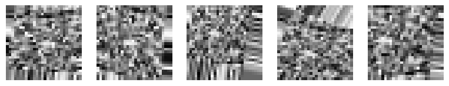

15.1 Introduction to Convolutional Neural Networks
15.1.1 What are Convolutional Neural Networks?
Convolutional Neural Networks (CNNs) are a specialized class of deep neural networks primarily used for processing structured grid data, such as images. They are designed to recognize patterns directly from image data, making them incredibly effective for tasks like image classification, object detection, and even facial recognition.
15.1.1.1 Importance of CNNs in Image Recognition
CNNs are at the heart of most modern image recognition systems. Traditional machine learning techniques and simple neural networks often struggle when it comes to working with large, high-dimensional images. This is because the input data (e.g., pixels in an image) is vast, and feeding this directly into a fully connected neural network would require an enormous number of parameters, making the process computationally expensive and inefficient.
CNNs overcome these challenges by employing a unique structure that: - Reduces the number of parameters. - Allows the network to focus on local features of an image. - Retains important spatial relationships.
This structure makes CNNs ideal for tasks like: - Image Classification: Assigning a label to an image (e.g., classifying an image of a dog as “dog”). - Object Detection: Identifying and localizing objects within an image. - Semantic Segmentation: Classifying each pixel of an image into a predefined category (e.g., background, road, car).
15.1.1.2 A Brief History and Emergence from the Visual Cortex
CNNs are inspired by the human visual cortex. In the brain, the primary visual cortex processes images in a hierarchical fashion: - Simple cells detect low-level features such as edges. - Complex cells combine those low-level features to recognize more complex patterns like shapes and objects.
The architecture of CNNs mimics this biological approach, using multiple layers to progressively extract higher-level features from an image. This idea was introduced in the 1980s by Yann LeCun and his collaborators, who developed LeNet, one of the earliest CNN architectures, which was used for handwritten digit recognition. CNNs gained popularity in the 2010s with the advent of powerful GPUs, large datasets, and advances in deep learning techniques.
15.1.1.3 Why Traditional Neural Networks Struggle with Large Image Recognition
Traditional neural networks (fully connected networks) struggle with large images because they require each neuron to be connected to every pixel in the image. For example: - Consider an image of size 100x100 pixels. This image has 10,000 individual pixels. - If the neural network has just 1,000 neurons in the first hidden layer, it would require 10 million connections for just the first layer.
This is not only computationally expensive but also prone to overfitting, as the network may memorize the entire image rather than learning generalized features. CNNs address these issues by leveraging their unique architecture, which focuses on local patterns and reduces the number of parameters significantly.
15.2 How Convolutional Neural Networks Work: Key Concepts
15.2.1 Convolutional Layers: The Heart of a CNN
Convolutional layers are the most critical part of a CNN. These layers apply convolutional operations (also known as filters or kernels) to extract features from the input image. Let’s break it down.
15.2.1.1 What is Convolution?
At a high level, convolution involves sliding a smaller filter (a matrix) across a larger image and computing a weighted sum of the filter and image regions. This operation produces an output called a feature map that highlights specific features in the image, such as edges, textures, or shapes.
Intuitive Explanation:
Imagine you have a magnifying glass, and you’re sliding it over a photo. As you slide the magnifying glass over each part of the image, you’re looking for specific patterns (like edges or corners). Each region you examine gets a score based on the pattern you’re looking for, and this score gets placed in a new image (feature map).
Analogy:
Think of convolution as moving a magnifying glass over a picture to focus on specific patterns, such as edges, corners, or textures. Just like how the glass zooms in on particular areas, convolution focuses on a small portion of the image, analyzing local features.
15.2.1.2 Python Example: Convolution Operation
Here’s a simple example in Python that demonstrates how a convolution operation works on an image using a 3x3 filter. We’ll use NumPy for the matrix operations.
import numpy as np# Example image (5x5) matrix (grayscale)image = np.array([[1, 2, 3, 0, 1], [4, 5, 6, 1, 2], [7, 8, 9, 2, 3], [0, 1, 2, 3, 4], [1, 2, 3, 4, 5]])# Example filter (3x3)filter_ = np.array([[0, 1, 0], [1, -4, 1], [0, 1, 0]])# Output matrix (feature map) after applying the convolutionoutput = np.zeros_like(image)# Apply convolution operation (valid padding, no padding)for i inrange(image.shape[0] - filter_.shape[0] +1):for j inrange(image.shape[1] - filter_.shape[1] +1):# Extract the region of interest (3x3) region = image[i:i +3, j:j +3]# Element-wise multiplication and sum output[i, j] = np.sum(region * filter_)print("Convolution Output (Feature Map):")print(output)
Convolution is mathematically expressed as the cross-correlation between the filter and the input image. Given an image ( I ) and a filter ( F ), the output of the convolution operation at position ( (i, j) ) is defined as:
( I_{i+m,j+n} ) are the values in the input image at position ( (i+m, j+n) ).
( F_{m,n} ) are the values in the filter.
This operation sums the element-wise product of the filter and the image region it overlaps with at each position.
15.2.2 Weight Sharing and Partially Connected Layers
15.2.3 Weight Sharing and Partially Connected Layers
15.2.3.1 Fully Connected Layers: The Challenge
In a standard fully connected layer, every neuron is connected to every pixel in the input image. However, this approach becomes computationally expensive as the input size grows.
15.2.3.2 How CNNs Reduce the Number of Connections
CNNs solve this problem using weight sharing and partially connected layers.
Weight Sharing: In CNNs, the same set of weights (i.e., the filter) is shared across the entire image. Instead of having unique weights for each pixel, the network uses the same filter to scan different regions of the image.
Translation-Invariant Features: This approach allows the network to recognize patterns (e.g., edges) regardless of their location in the image.
Reduced Parameters: By reusing weights, CNNs significantly reduce the number of parameters, making the model more efficient and less prone to overfitting.
15.2.3.3 Example: Fully Connected vs. Partially Connected Structure
Here’s an example comparing a fully connected structure and a partially connected structure (with weight sharing):
import numpy as np# Fully connected example (for simplicity, consider a 3x3 image and a 3x3 filter)image_fc = np.array([[1, 2, 3], [4, 5, 6], [7, 8, 9]])# Fully connected: Every pixel connects to every neuronfully_connected = np.sum(image_fc) # Total sum of all pixels as a single feature# Convolutional: Weight sharing via the filter (same filter applied across the image)filter_fc = np.array([[1, 0, 1], [0, 1, 0], [1, 0, 1]])# Convolutional operation (using valid padding)conv_output = np.zeros_like(image_fc)for i inrange(image_fc.shape[0] - filter_fc.shape[0] +1):for j inrange(image_fc.shape[1] - filter_fc.shape[1] +1): region = image_fc[i:i +3, j:j +3] conv_output[i, j] = np.sum(region * filter_fc)print(f"Fully Connected Output: {fully_connected}")print(f"Convolutional Output (Weight Sharing):\n{conv_output}")
In this example, the fully connected output is just the sum of all pixels, treating them as a single feature. In contrast, the convolutional output uses a filter that scans across the image and reuses weights, showing how CNNs are more efficient in terms of the number of parameters.
15.2.4 Image Representation: Channels, Pixels, and Depth
In a colored image, each pixel is represented by multiple values that correspond to different channels. For a typical RGB (Red, Green, Blue) image, each pixel has three values corresponding to the intensities of these three colors.
15.2.4.1 How Images are Represented as Matrices
An image is often represented as a 3D matrix with the shape:
Height: The number of rows (or pixels along the vertical axis).
Width: The number of columns (or pixels along the horizontal axis).
Channels: The number of color channels (e.g., RGB has 3 channels).
For example, a 10x10 image with 3 channels (RGB) would be represented as a matrix of shape ( [10, 10, 3] ).
15.2.4.1.1 Analogy
A colored image is like a box of crayons, where each crayon (channel) represents a different color. Just like how a box of crayons has multiple colors, an image has multiple channels (e.g., Red, Green, Blue).
15.2.4.2 Python Example: Representing a Colored Image Matrix in NumPy
Here’s a Python example to represent an RGB image as a 3D matrix using NumPy:
import numpy as np# Create a 10x10 image with 3 color channels (RGB)height, width =10, 10channels =3# RGB channels# Random image with pixel intensities between 0 and 255image_rgb = np.random.randint(0, 256, (height, width, channels))print("RGB Image Matrix (10x10x3):")print(image_rgb)
The power of Convolutional Neural Networks (CNNs) lies in the interplay between their building blocks: Convolutional Layers, Pooling Layers, and Fully Connected (Dense) Layers. These components work together to process and learn from image data, progressively refining the features extracted to make better predictions.
15.3.1 Convolution Layer
The Convolution Layer is the heart of a CNN. It’s responsible for extracting features from the input image by applying filters (kernels) to the image.
15.3.1.1 Understanding Filters (Kernels) and Feature Maps
Filters (or Kernels): Filters are small matrices used to scan over the image. Each filter is designed to detect certain patterns or features (like edges, corners, textures, etc.).
Feature Maps: The result of applying a filter over an image. These maps highlight the detected features in different regions of the image.
15.3.1.2 How Filters Detect Specific Features
Filters scan the image through convolution operations, and depending on the filter’s values, they may highlight edges, corners, or other features in the image.
15.3.1.3 Example: Visualizing Filters and Their Outputs
In this Python example, we will visualize a filter (kernel) and see how it detects edges in an image using a simple convolution operation.
In this example, we use a simple Sobel edge detection filter to highlight vertical edges in the image. The result is a feature map that shows where edges are detected.
Analogy
Imagine a magnifying glass over an image: just as a magnifying glass helps you zoom into specific areas to find tiny details, the filter slides over the image and focuses on detecting specific features like edges, corners, or textures.
15.3.2 Pooling Layer
The Pooling Layer is used to reduce the spatial dimensions (height and width) of the image while retaining important features. This is especially useful in CNNs because it reduces computational complexity and helps prevent overfitting.
15.3.2.1 The Role of Pooling in CNNs
Pooling is essentially a form of down-sampling, where we reduce the resolution of the image to focus on its most important features. The pooling layer summarizes the input feature map and makes the network more efficient by reducing the number of parameters.
15.3.2.2 Max Pooling
Max Pooling is the most common type of pooling. In max pooling, a filter (usually 2x2) slides over the image, and for each region, it selects the maximum value. This reduces the spatial dimensions of the image but retains the most important features.
15.3.2.3 Example: Max Pooling with Python
Here’s an example of how max pooling works using a 2x2 filter:
Pooled Feature Map (Max Pooling):
[[5. 6.]
[8. 9.]]
In this example, we use a 2x2 pooling filter with a stride of 2 to reduce the dimensions of the feature map. The result is a smaller, more abstracted feature map, with only the maximum values retained.
Analogy
Think of pooling as summarizing a large text into a few important keywords. You extract the most critical information (like the highest values in a region) to understand the core content, without getting bogged down in all the details.
15.3.3 Fully Connected Layer (Dense Layer)
The Fully Connected Layer (Dense Layer) is where the network makes final decisions. After several convolutions and pooling operations, the network has learned abstract features of the image. These features are passed to a fully connected layer for classification.
15.3.3.1 Transition from Convolution and Pooling to Fully Connected Layers
After feature extraction through convolution and pooling, the flattened feature map is passed to a fully connected layer. This layer uses learned weights and biases to compute a final output, such as a classification label.
15.3.3.2 Use of Activation Functions: ReLU and Softmax
ReLU (Rectified Linear Unit): Commonly used in CNNs to introduce non-linearity, helping the model learn more complex patterns.
Softmax: Typically used in the final fully connected layer for multi-class classification problems, as it converts the raw output into probabilities that sum to 1.
15.3.3.3 Example: Simple Python Model Ending with a Dense Layer
Here’s a simple Python example using Keras to build a CNN that ends with a dense layer for classification. The model will use ReLU and Softmax activation functions.
from tensorflow.keras.models import Sequentialfrom tensorflow.keras.layers import Conv2D, MaxPooling2D, Flatten, Dense# Create a simple CNN modelmodel = Sequential()# Convolutional layer with 32 filters, 3x3 filter size, ReLU activationmodel.add(Conv2D(32, (3, 3), activation='relu', input_shape=(28, 28, 1)))# Max pooling layer with 2x2 pool sizemodel.add(MaxPooling2D(pool_size=(2, 2)))# Flatten the output from the previous layermodel.add(Flatten())# Fully connected (dense) layer with 128 neurons and ReLU activationmodel.add(Dense(128, activation='relu'))# Output layer with Softmax activation (for multi-class classification)model.add(Dense(10, activation='softmax')) # For 10 classes# Summarize the modelmodel.summary()
C:\Users\roess\Documents\repos\Notes\myvenv312\Lib\site-packages\keras\src\layers\convolutional\base_conv.py:107: UserWarning:
Do not pass an `input_shape`/`input_dim` argument to a layer. When using Sequential models, prefer using an `Input(shape)` object as the first layer in the model instead.
Convolutional Layers: Extract features like edges, textures, and shapes from images.
Pooling Layers: Reduce the size of feature maps, retaining important features.
Fully Connected Layers: Make the final decision, using learned features to classify the image.
Through these three building blocks—convolution, pooling, and fully connected layers—CNNs efficiently process images, learning increasingly abstract features that help in image classification tasks.
15.4 CNN Architecture and Layers
15.4.1 Layer-by-Layer Breakdown
CNNs are structured in a sequential manner where each layer extracts increasingly complex features from the image. These layers work together to transform raw pixel data into meaningful representations used for classification or object detection.
15.4.1.1 Layer-by-Layer Breakdown
A typical CNN consists of the following layers, arranged in a structured manner:
Convolutional Layers – Extract features using filters/kernels.
Pooling Layers – Reduce spatial dimensions while retaining important features.
Fully Connected (Dense) Layers – Make final predictions using extracted features.
Most CNN architectures follow this pattern but vary in the number and types of layers used.
15.4.1.2 Typical CNN Architectures
Several famous CNN architectures have significantly influenced deep learning:
LeNet-5 (1998) – One of the earliest CNNs designed for digit recognition.
AlexNet (2012) – Popularized deep CNNs, winning the ImageNet competition.
VGGNet (2014) – Used very deep networks (16+ layers) for better feature extraction.
Explanation: - Conv2D(32, (3,3)): A convolutional layer with 32 filters of size 3×3. - MaxPooling2D(2,2): Down-samples the feature map to retain important information. - Flatten(): Converts 2D feature maps into a 1D vector. - Dense(128, activation='relu'): A fully connected layer with 128 neurons. - Dense(10, activation='softmax'): The final layer for classification into 10 categories.
15.4.2 Training CNNs: Forward Propagation and Backpropagation
Training a CNN involves two key steps: forward propagation (where the network makes predictions) and backpropagation (where it learns from its mistakes).
15.4.3 Forward Propagation: Making Predictions
During forward propagation:
Each layer applies transformations to the input (convolution, activation, pooling).
Features are extracted progressively.
Fully connected layers use these features to make predictions.
Analogy:
Think of forward propagation as solving a maze: - You start at the entrance (input image). - You make a series of choices (filters detecting patterns). - You reach an exit (prediction) based on your path.
15.4.3.1 Backpropagation: Learning from Mistakes
Once predictions are made, the network compares them to the actual labels and computes the error using a loss function.
During backpropagation:
Gradients are computed using the chain rule.
Weights are updated to reduce the error using an optimization algorithm (like Adam or SGD).
The process repeats until the model learns to make accurate predictions.
Analogy:
Backpropagation is like re-tracing your steps in a maze: - If you hit a dead end (wrong prediction), you go back and adjust your path. - Each time you retry, you get closer to the correct exit (better prediction).
15.4.3.2 Example: Training a CNN in Keras
Below is a Python example that demonstrates how to train a CNN using Keras and TensorFlow.
<keras.src.callbacks.history.History at 0x2017f5ba750>
Explanation: - Data Preprocessing: The MNIST dataset is loaded and normalized. - CNN Definition: Convolutional and pooling layers extract features. - Flattening: Feature maps are flattened into a 1D vector. - Fully Connected Layers: Used for final classification. - Model Compilation: Uses Adam optimizer and categorical cross-entropy loss. - Model Training: Trains the CNN for 5 epochs.
15.4.4 Summary
CNNs follow a structured architecture: convolutional layers extract features, pooling layers reduce dimensions, and fully connected layers make final predictions.
Popular CNN architectures include LeNet, AlexNet, and ResNet.
Training involves forward propagation (feature extraction and predictions) and backpropagation (learning from errors).
Python and Keras make it easy to define and train CNNs.
15.5 CNN Optimization and Techniques
CNNs can be optimized in several ways to improve performance, reduce overfitting, and generalize well to new data. This chapter explores key optimization techniques, including stride and padding, dropout and regularization, and data augmentation.
15.5.1 Learning with CNNs: Strides, Padding, and Filter Sizes
15.5.1.1 Strides
The stride determines how far the convolutional filter moves at each step across the image.
Stride of 1: Moves one pixel at a time → More detailed feature extraction.
Stride of 2 or more: Moves multiple pixels → Reduces spatial size but loses detail.
Analogy:
Think of stride like reading a book: - Stride of 1 → Reading every word carefully. - Stride of 2 → Skipping every other word for a faster but less detailed understanding.
15.5.1.2 Padding
Padding helps control the size of feature maps:
Valid Padding (“No Padding”): Reduces the spatial dimensions → Can lose edge details.
Same Padding (“Zero Padding”): Keeps the same output size by adding extra pixels → Preserves border information.
15.5.1.3 Example: Visualizing the Effect of Stride and Padding
CNNs are prone to overfitting, meaning they perform well on training data but poorly on unseen data. Dropout is a technique where some neurons are randomly ignored during training, forcing the network to learn more generalized patterns.
Analogy:
Imagine a student who relies only on a single book for an exam. If that book is removed (dropout), they are forced to study multiple sources, leading to better learning.
15.5.2.2 Adding Dropout in a CNN
from tensorflow.keras.layers import Dropoutmodel = tf.keras.Sequential([ tf.keras.layers.Conv2D(32, (3,3), activation='relu', input_shape=(28,28,1)), tf.keras.layers.MaxPooling2D(pool_size=(2,2)), Dropout(0.25), # Dropout applied to prevent overfitting tf.keras.layers.Conv2D(64, (3,3), activation='relu'), tf.keras.layers.MaxPooling2D(pool_size=(2,2)), Flatten(), tf.keras.layers.Dense(128, activation='relu'), Dropout(0.5), # Increased dropout before final layers tf.keras.layers.Dense(10, activation='softmax')])# Compile the modelmodel.compile(optimizer='adam', loss='categorical_crossentropy', metrics=['accuracy'])model.summary()
Data augmentation artificially increases the size of a dataset by applying transformations such as rotation, flipping, scaling, and shifting to existing images.
15.5.3.1 Benefits of Data Augmentation
Prevents Overfitting: Introduces variability to the dataset.
Improves Generalization: Makes CNNs robust to different orientations and distortions.
Mimics Real-World Variations: Handles changes like lighting, rotations, and object distortions.
15.5.3.2 Example: Applying Data Augmentation using Keras
from tensorflow.keras.preprocessing.image import ImageDataGeneratorimport numpy as npimport matplotlib.pyplot as plt# Define an image data generator with augmentationdatagen = ImageDataGenerator( rotation_range=30, # Random rotation width_shift_range=0.2, # Random horizontal shift height_shift_range=0.2, # Random vertical shift horizontal_flip=True, # Random horizontal flipping zoom_range=0.2# Random zoom)# Load a sample imagesample_image = np.random.rand(1, 28, 28, 1) # Simulated grayscale image# Generate augmented imagesaugmented_images = [next(iter(datagen.flow(sample_image, batch_size=1)))[0] for _ inrange(5)]# Display the augmented imagesfig, axes = plt.subplots(1, 5, figsize=(10, 2))for img, ax inzip(augmented_images, axes): ax.imshow(img.squeeze(), cmap='gray') ax.axis('off')plt.show()

15.6 Real-World Applications of CNNs
CNNs power some of the most advanced AI applications today, including image classification, object detection, and face recognition.
15.6.1 Image Classification
CNNs classify images into categories, e.g., detecting cats vs. dogs.
15.6.1.1 Example: Using a Pre-Trained CNN for Image Classification
from tensorflow.keras.applications import VGG16from tensorflow.keras.preprocessing import imagefrom tensorflow.keras.applications.vgg16 import preprocess_input, decode_predictionsimport numpy as np# Load a pre-trained VGG16 modelmodel = VGG16(weights='imagenet')# Load and preprocess an imageimg_path ='example.jpg'# Replace with a real image pathimg = image.load_img(img_path, target_size=(224, 224))img_array = image.img_to_array(img)img_array = np.expand_dims(img_array, axis=0)img_array = preprocess_input(img_array)# Predict the classpreds = model.predict(img_array)print("Predicted:", decode_predictions(preds, top=3)[0]) # Show top 3 predictions
15.6.2 Object Detection
CNN-based models like YOLO (You Only Look Once) and Faster R-CNN can detect multiple objects in an image. These models output bounding boxes around detected objects.
15.6.3 Example Applications:
Autonomous Vehicles: Detects pedestrians, traffic signs, and other cars.
Medical Imaging: Identifies tumors in X-rays or MRI scans.
Security Systems: Face recognition for access control.
15.7 Conclusion and Summary
Recap the main ideas of CNNs: Their architecture, functionality, and use cases.
The future of CNNs in computer vision.
Final thoughts: CNNs have revolutionized how machines process visual data.